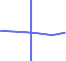

After you sign up with just an email address and password, Communic lets you browse, search through and contribute to a growing database of exciting projects initiated by our users. 
By creating a project with a name, short description and an image, users make their ideas available for open collaboration with our community.
Each project is structured in a way that invites anyone it inspires to find a way to contribute while offering a clear and intuitive framework for bringing it to life.
Projects are divided into sections defined by users, which are further broken down into a series of tasks, with titles and descriptions. Once users have joined the project, they can review tasks, sign up to work on them, and add their own.
Communic is a springboard for connecting motivated creators and forming enduring teams around their shared passions and diverse skillsets.
Our design focuses on who is working on a specific project or task, allowing you to communicate, collaborate and meet up with other users who want to work on the same ideas, and to grow together by taking on new challenges with your past teammates.
Our transparent visual design maps the journey of a project as teams are formed and tasks are added, revised and completed.
The project page shows the project team, its sections and the status of each task. Tasks which have been completed or rethought are clearly distinguished, allowing everyone to easily and quickly understand what work has been done on the project, how the project has refined, and what still needs to be done. Communic offers a platform for sharing your vision and making it a reality.
Create an account
Explore all the projects and join those you like
Participate, contribute, do something!